Vingt petites questions pour que Dropit te connaisse un peu, avant même de te laisser entrer dans l'app.
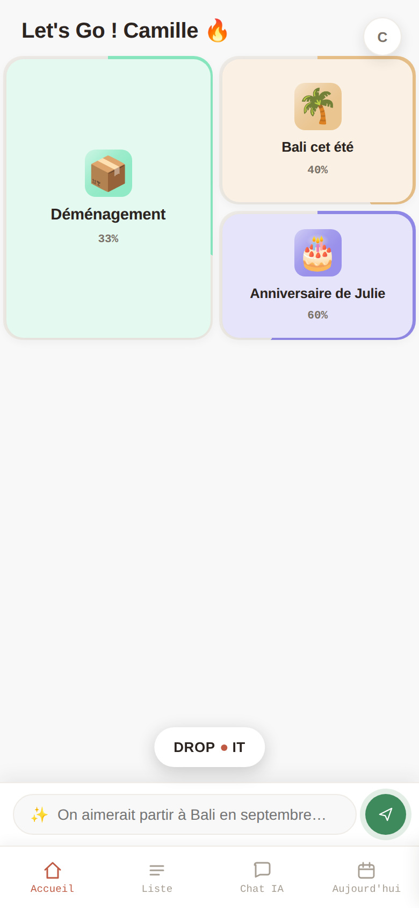
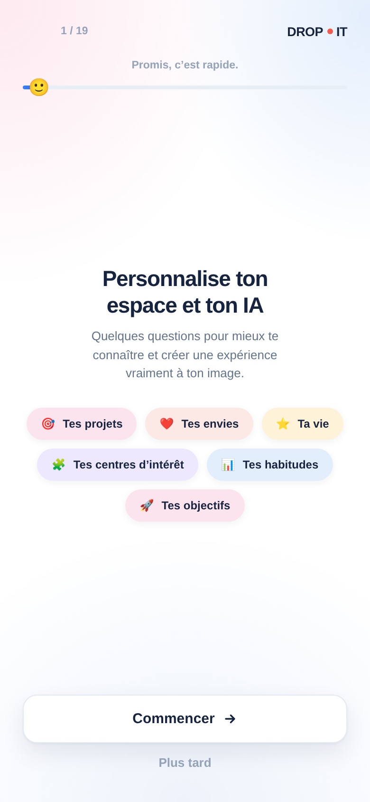
Rien ne change dans tes projets — seule la façon dont ton assistant te parle s'ajuste, doucement, à mesure qu'il te connaît.
Un univers visuel à part — bleu, tout en douceur — pour bien marquer que c'est un moment à part, avant d'entrer dans l'app.
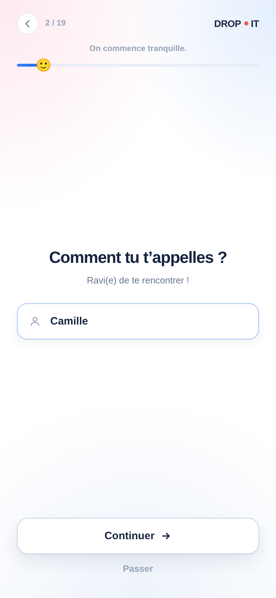
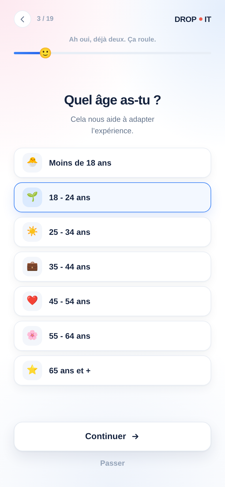
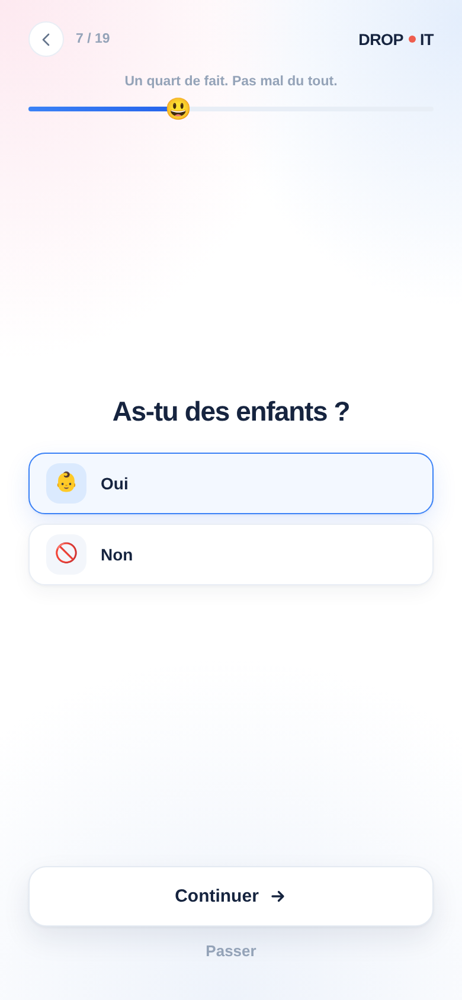
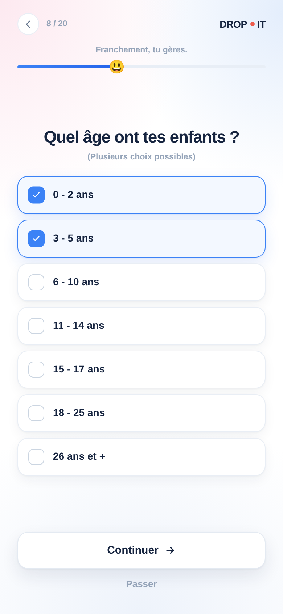
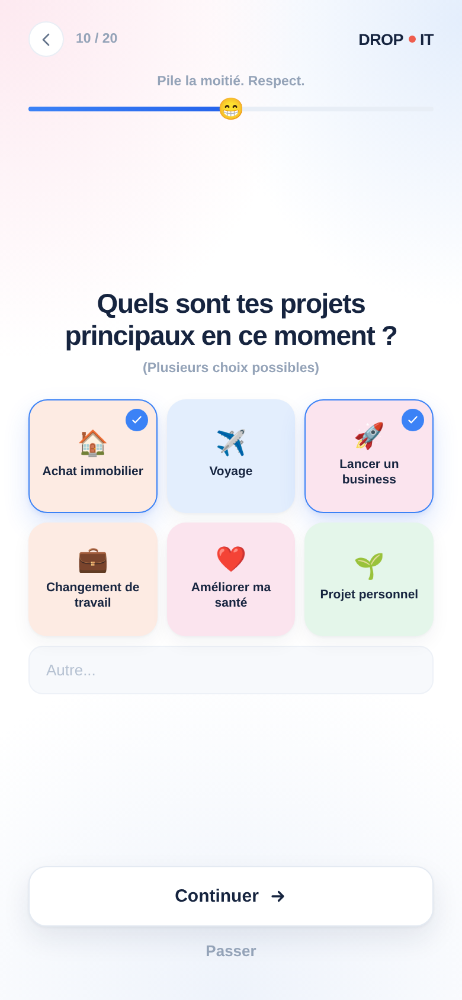
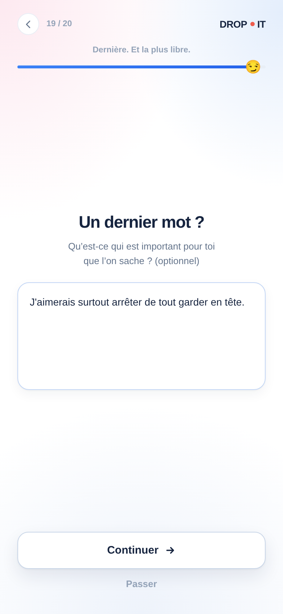
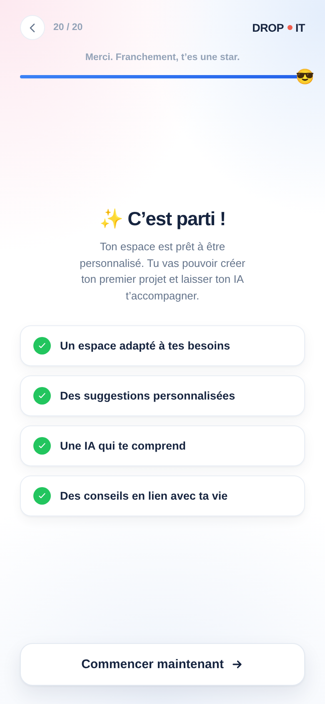
Une question t'ennuie ? Tu la passes. Tu n'as pas le temps ? Tu reviens plus tard, depuis ton profil — jamais obligé d'aller au bout.
Sur un écran un peu petit, le début d'une question disparaissait — et rien ne permettait de le faire réapparaître en faisant défiler. C'est réparé.
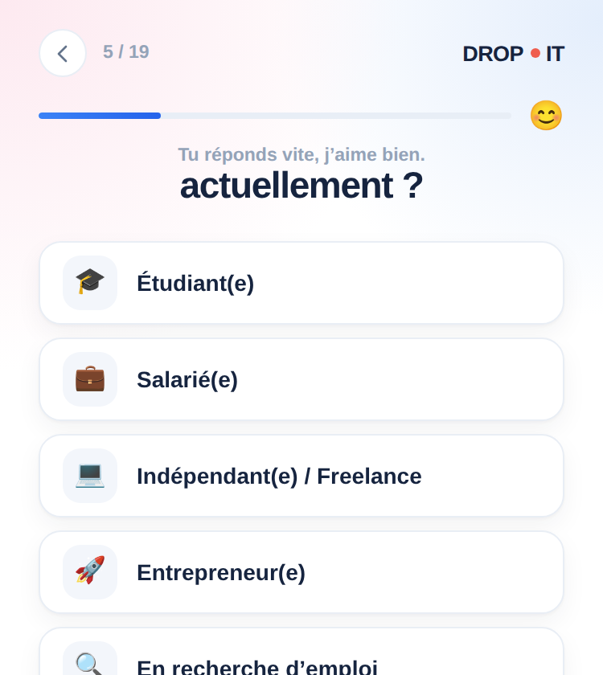
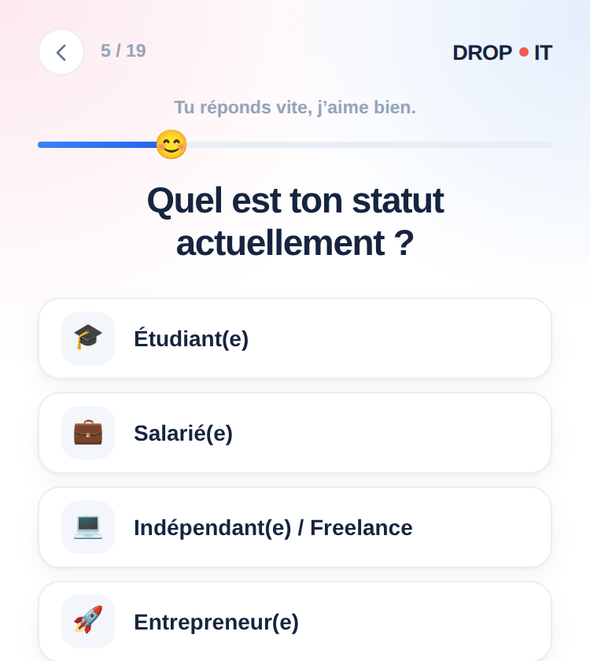
L'écran centrait son contenu verticalement pour bien faire respirer les questions courtes. Mais sur une question chargée (titre long, beaucoup d'options) qui dépassait la hauteur disponible, ce centrage rognait le haut du contenu — et cette zone restait hors de portée du défilement.
Corrigé avec justify-content:safe center : centré tant que
le contenu tient dans l'écran, aligné en haut sinon. Plus rien n'est jamais perdu, sur aucune taille d'écran.
Pas de magie compliquée : tes réponses suivent un chemin très court, entre le moment où tu les donnes et celui où ton assistant s'en sert.
Tu réponds à quelques questions, à ton rythme
Elles restent privées, gardées pour toi seul
Ton assistant les relit avant chaque échange
Tu peux tout revoir ou recommencer, à tout moment
Une table dédiée, dropit_user_profile, une ligne par compte — séparée des
projets, qui eux sont réécrits en entier à chaque sauvegarde et n'ont pas à porter ce poids en plus.
functions/api/profile.js lit et écrit les réponses. La date de fin n'est posée
qu'au tout dernier écran, jamais effacée par une sauvegarde en cours de route.
functions/api/ai.js ajoute le profil au message envoyé à l'IA, côté serveur —
un seul point de passage, impossible à contourner depuis l'app.
Un compte neuf enchaîne questionnaire → visite guidée → notice des exemples, sans jamais empiler deux fenêtres à l'écran.
Vingt questions, un correctif en plus, et un assistant qui commence chaque conversation en te connaissant un peu mieux.